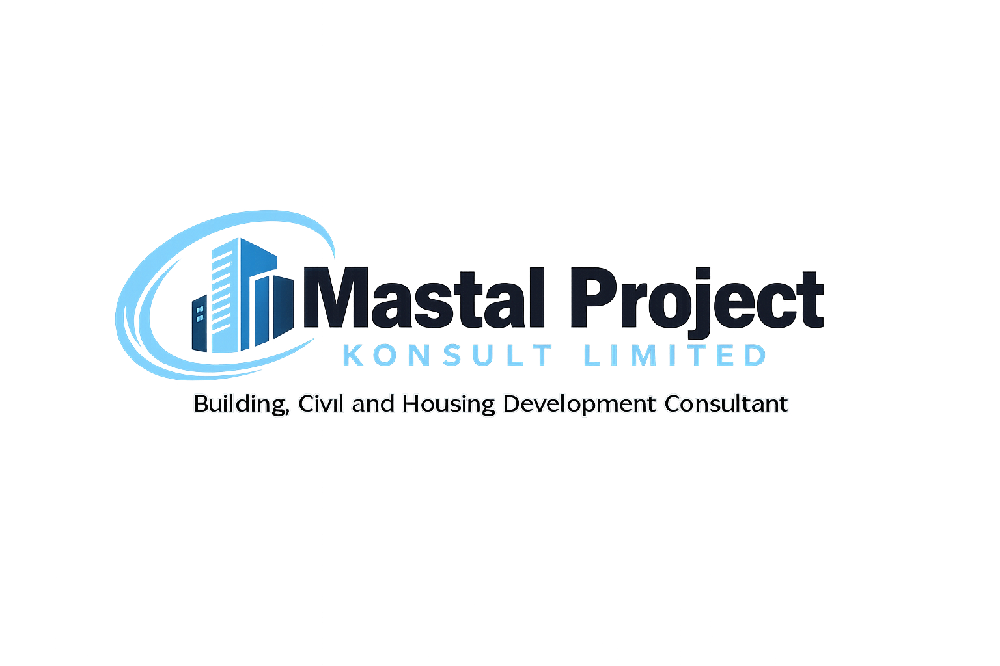

Welcome to Mastal Business Times, the official newsletter of Mastal Project Konsult Limited.
Olanite Fẹmi Joseph, B.Tech, M.Sc, MNIQS, RQS, continues to provide leadership and professional excellence as the Chief Executive Officer of Mastal Project Konsult Limited.
Through his expertise as a Quantity Surveyor and Construction Consultant, he has helped numerous clients achieve value for money, effective project delivery and sustainable development.
His commitment to professionalism, integrity, innovation and client satisfaction has positioned Mastal Project Konsult Limited as a trusted consultancy firm in the areas of quantity surveying, project management, building consultancy, civil engineering consultancy and housing development.
The company remains committed to delivering high-quality consultancy services that contribute positively to the construction industry in Nigeria and beyond.
Construction Consultancy plays a vital role in the successful execution of construction projects. It ensures that projects are properly budgeted, monitored and delivered within cost.
At Mastal Project Konsult Limited, we help clients manage construction costs, prepare bills of quantities and ensure value for money throughout the life cycle of every project.